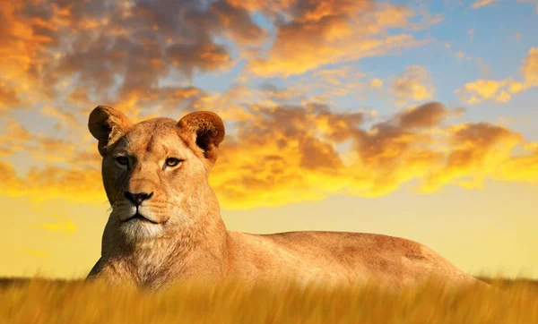
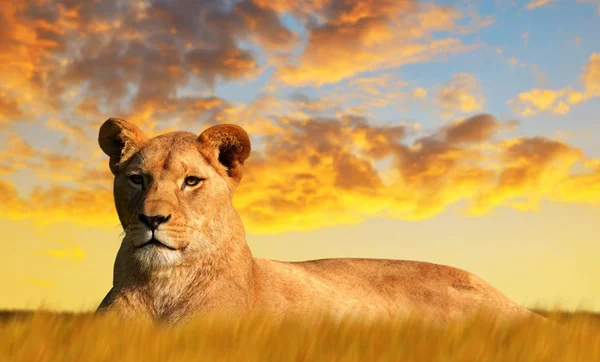

Informacion sobre el Leon
Habitos Alimenticios
Los leones comen principalmente mamíferos herbívoros como Cebras, Gacelas o Jabalíes,. Los leones viven y cazan en grupos llamados manadas. Las leonas son las que cazan acechando y luego persiguiendo a su presa hasta atraparla. Sin embargo, no tienen una resistencia particularmente elevada. Así pues, a pesar de que las hembras pueden alcanzar una velocidad punta de unos 59 km/h, solo lo pueden hacer en rápidas, pero cortas aceleraciones, de forma que han de estar cerca de la presa antes de iniciar el ataque
 

El león generalmente caza haciendo un lento acecho, alternando movimientos de inmovilización y de avance, arrastrándose. Utiliza cualquier objeto que le proporcione cubierta. Después, hace una carrera final y salta sobre la presa elegida. Si la víctima no puede ser capturada en una persecución de 50 a 100 m., el león se cansa y abandona la caza. Sin embargo, se han visto persecuciones de hasta 500m. las presas pequeñas son muertas de un zarpazo, pero las más grandes son mordidas en el cuello, desgarrando sobre la boca y los orificios nasales. Algunas veces dos leones se aproximan a una presa en direcciones opuestas, si uno falla, el otro trata de atraparla cuando huye.
Tabla Informativa
| Habitad | Ubicacion | Estado de Conservacion |
|---|---|---|
| Habitan en las sabanas africanas y en una zona reducida del noreste de la India, pero son una especie muy vulnerable pues antiguamente habitaban en otras partes del mundo de las que han ido desapareciendo. | Angola,Benin, Botswana, Burkina Faso, Camerún, República Centroafricana, Chad, República Democrática del Congo. | Vulnerable |